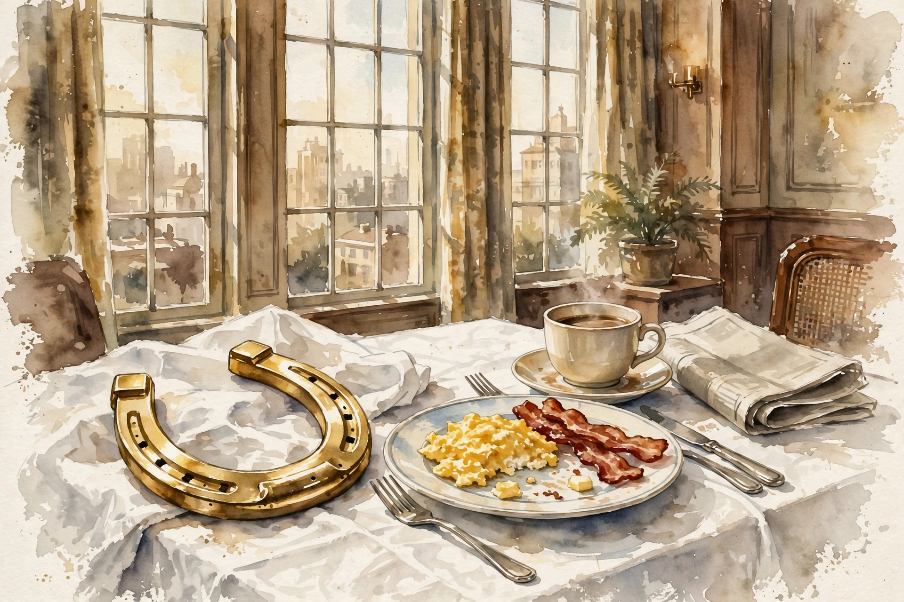
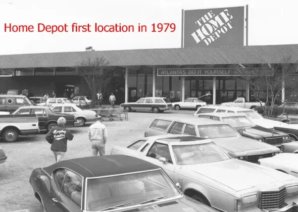
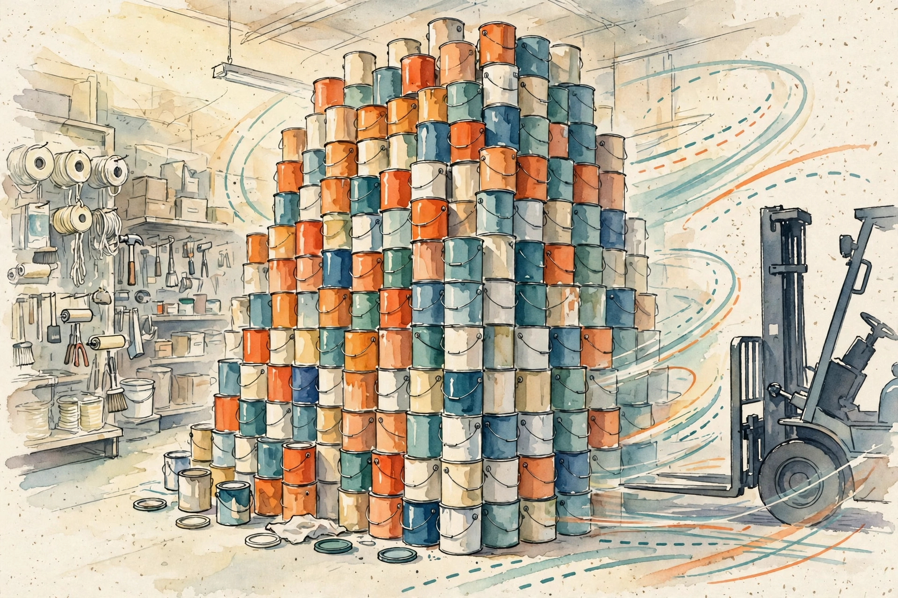
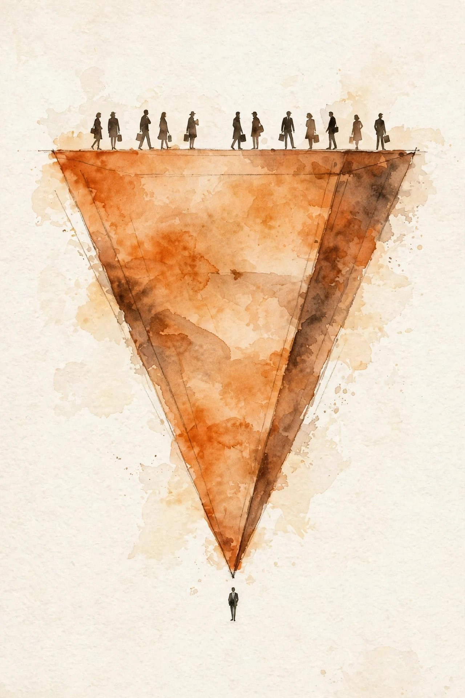
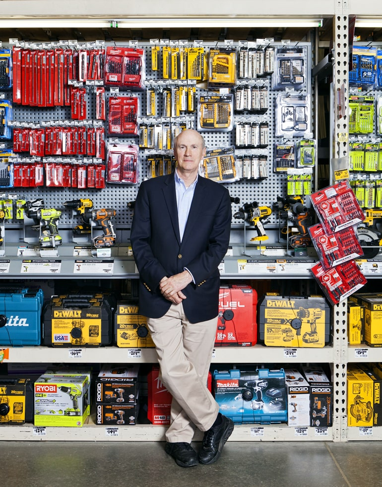

Acquired · Fall 2026 · Episode 2 · Companion
The Home Depot
How two men, fired at 48 and 35 with no savings, built a warehouse with no frills into the best-performing stock in the history of the American market. This companion follows the full episode, chapter by chapter, and pulls out the business wisdom buried in the story.
Watch. The official Acquired episode video. Use the chapter menu above to jump to any section of this companion as you listen.
Intro: The Store You Drove Past
Ben Gilbert opens with a confession. Before his research, he thought of Home Depot as a big box in the middle of a shopping center, not as a company that matters to the world. He was wrong, and the numbers correct him fast.
Home Depot is the largest specialty retailer on earth. Only general retailers stand above it: Walmart, Amazon, Costco. Every other vertical retailer sits below. It ranks as the 45th most valuable public company in the world, with a market value near $350 billion. That puts it ahead of Netflix, Alibaba, Goldman Sachs, LVMH, and Disney, the subject of Acquired's prior episode.
Then comes the stat that frames the whole episode. Home Depot went public in 1981, one year after Apple. Put $1,000 into each IPO and hold to today, and the Home Depot stake wins. With dividends reinvested, it grew at nearly 25 percent per year for 45 years. That $1,000 is now about $17 million. The same $1,000 in the S&P 500 is now about $170,000. From its IPO day to today, Home Depot is the number one performing stock in the S&P 500.
The company employs an astonishing 470,000 people, more than any American tech company but Amazon, more than any bank on earth. And it started with two men who got fired with no savings and a crazy idea: a hardware store with five times the square footage of anything in the industry.
$1,000 at the 1981 IPO, held to today
Hover any bar for detail. The vertical axis uses a log scale, or the S&P bar would vanish.
Source: Acquired, The Home Depot episode, ~00:01:50. The episode notes the Home Depot figure assumes dividend reinvestment.
Bernie Marcus's Early Career
Bernie Marcus grew up in a poor family of Jewish immigrants in the rough neighborhoods of Newark, New Jersey, in the 1930s. As a kid he ran with a gang. He was also smart, and he became the first person in his family to attend college, at Rutgers. His dream was medical school and a career as a psychiatrist. His family had no money for it.
So Bernie became a pharmacist. That led him to run a concession, a store within a store, in a New York area discount shop. That was the start of his retail education. From there he joined the discount chain Two Guys, and in his thirties he reached an executive role at the Daylin Corporation, a Los Angeles retail conglomerate that bought up small chains across every category: pharmacies, hardware, clothing, home furnishings, discounters. David Rosenthal compares Daylin to an index fund on postwar suburban retail concepts.
The 1960s were electric for retail. Malls rose across the suburbs. Sears built anchor stores. Kmart spread as a discounter. Sam Walton started Walmart in the rural South. Then the 1970s turned brutal: oil shocks, stagflation, interest rates in the teens. Suburban shopping dried up.
In 1972 Daylin made Bernie CEO of its Handy Dan hardware chain. He owned no equity. He was an employee with a title. He came from retail, not hardware, and that is the point Ben loves most about this story: none of the future Home Depot founders knew the hammer business. They knew retail. Bernie soon recruited a young finance star from inside Daylin, Arthur Blank, to serve as his CFO at Handy Dan. Bernie knew his own weak spot was finance.
Handy Dan itself was a public company, a 19 percent stub floated by Daylin in a Wall Street fad of the era. Parent firms spun off slices just under 20 percent so they could keep consolidating the division on their books. The stubs usually traded at a discount to an already discounted parent. None of that mattered to Bernie and Arthur. They made Handy Dan the best operator in a weak industry.
The industry they found was a patchwork of clubby, regional, unsophisticated stores with thin assortments. You bought lumber at one shop, tools at another, plumbing at a third. The largest player, Lowe's of North Carolina, did about $150 million in total annual revenue from small strip-mall stores, each a fifth the size of a modern Lowe's. Lowe's started as a general store in 1921, already fifty years old. The do-it-yourselfer barely existed as a category, because no store let a homeowner trust that one trip could supply a whole project. Home Depot would later invent that trust.
Ken Langone and Handy Dan
Enter the third founder, Ken Langone of New York. He grew up as an Italian kid on Long Island, talked his way onto Wall Street, and while still young won the sole IPO manager role for Ross Perot's EDS. He later sat on the boards of the New York Stock Exchange and General Electric. His signature trait was total loyalty: he almost never sold a share of any company he backed.
In the mid-1970s Ken took public a Philadelphia hardware chain, Panelrama, which then hit hard times. He asked its CEO a simple question: who is the best operator in this business? The answer came back at once: Handy Dan, out in California. Ken knew Wall Street, and on Wall Street Handy Dan looked like a bankruptcy. The CEO corrected him: the parent Daylin faced bankruptcy, but Handy Dan thrived.
Ken pulled out his Moody's manual, the paper book investors used to check financials. Handy Dan traded at $3 a share and earned about $1.50 a share in post-tax income. Two times earnings. Something had to be wrong, or the market missed something huge. Ken called Bernie on the spot: are your financial statements true? Then he booked a flight and showed up for lunch the next day. Bernie brought his lawyer, to make sure he told this Wall Street stranger nothing nonpublic.
Lunch convinced Ken the numbers were real and Bernie was a gifted retailer. Then Ken asked the key question: do you have any equity in this company? Bernie said no. Ken told him he would fly home and start buying every public share of Handy Dan, and Bernie should mortgage his house and do the same. Bernie, street-smart but innocent about markets, said it was too risky. Ken bought anyway, ending near 20 percent of the company, his last shares around $9. The only block he could not buy was 50,000 shares, about 2 percent, held by the Brooklyn-based Congregation of the Most Holy Redeemer. When the priest asked Ken, under the pain of hell, what to do, Ken told him to keep the shares.
Ken's deeper insight was about the category itself. He liked to say God was good to hardware and home improvement. Americans kept building houses, and houses decay. The rule of thumb: a homeowner must reinvest about 1 percent of the home's market value each year in maintenance, before any improvement. It was a subscription business hiding inside a retail store.
By now Ken flew out for Handy Dan store openings as part of the crew. At one opening in Houston, Texas, he found Bernie melancholy amid his best store yet. Bernie confessed he had the perfect home improvement store in his head, and someone would build it and destroy them all. He had just visited an old retail friend in San Diego, Sol Price, fresh from the launch of Price Club: the warehouse is the store, no back room, no distributors, goods bought direct from manufacturers and sold barely above wholesale. Bernie saw the future and knew it would come for hardware.
The plan took shape. Not a 10,000 square foot shop like Lowe's or Handy Dan, but a 60,000 square foot warehouse. Not 8,000 items, but 25,000. Not $3 million per store, the best Handy Dan number, but $7 to $9 million. Gross margin of 30 percent instead of the industry's 45. Everything about it looked insane on paper. Bernie knew it was inevitable.
The Buyout and the Firing

Ken's big Handy Dan stake made him a de facto board member, and he loved everything Bernie and Arthur did. That closeness irritated the new Daylin CEO, Sandy Sigoloff, the bankruptcy turnaround artist who called himself Ming the Merciless after the Flash Gordon villain. Bernie, ever trusting, suggested Ken go meet Sigoloff and build a relationship. Ken saw at once that Sigoloff was bad news.
Sigoloff wanted Ken gone and asked what it would take to buy back the stake. Ken named no serious price at first. Sigoloff sent his lieutenant, Jeffrey Chanin, to negotiate. Chanin offered $10. Ken countered $12. Chanin refused, followed Ken into the men's room two minutes later, and accepted $12. Ken told him the offer was off the table: you had an offer and a denial, no deal. Chanin demanded a price. Ken said $14. A week later Sigoloff himself called and offered $14. Ken said that offer was off the table too. He did not want to sell.
Then Bernie called and begged. Sigoloff hounded him daily, and the Ken situation was his biggest headache. Just sell, make my life easier. Ken warned him plainly: I am the only thing protecting you from Sigoloff. Sell my shares and he will fire you. Bernie insisted he could handle it. Ken sold in January 1978 at $25.50 a share, up from an average entry near $5 or $6, the one sale of his investing life. When Sigoloff asked why the odd number, Ken said it was to look like hard bargaining.
Three months later Sigoloff fired Bernie, Arthur, and their audit manager Ron Brill. The pretext was a labor relations investigation that Sigoloff launched against his own company. With Ken's outside block gone, nothing stopped him.
The next day Bernie flew to New York and met Ken for breakfast at Peacock Alley in the Waldorf Astoria. It was April 1978. Bernie was 48, Arthur was 35. They had no savings and no equity. Sigoloff's case hung over them. Bernie was distraught. Ken told him to relax. As the episode quotes him:
kicked in the ass with a golden horseshoe
Ken Langone to Bernie Marcus, April 1978 · Episode @00:33:08
Now they would start the company Bernie described in Houston. But first Bernie needed one thing: Sol Price's blessing. He flew to San Diego and laid it all out over dinner. Sol asked him if he thought he was talented, and if he thought he could build something on his own. Bernie said yes to both. Sol told him to tell Sigoloff to go to hell and do it. Bernie was in, with one more condition to check: Sol had to confirm he would not bring Price Club into home improvement himself. He would not.
Ken's Handy Dan trade
Buy the whole float at ~$3 to $9, sell it all at $25.50 two years later.
Source: Acquired, The Home Depot episode, @00:22:00 to @00:36:00. Average entry estimated near $5 to $6 per the episode.
Ross Perot Almost Buys Home Depot
The founders had the idea and the team. They lacked the money. A warehouse full of power tools and lumber needs serious capital, and the two operators had none. So Ken flew everyone to Dallas to meet the richest man he knew: Ross Perot.
Perot at the time was not yet the presidential candidate of the 1990s. He was the Larry Ellison of his day, a top IBM salesman turned founder of EDS, the enterprise computing services giant later bought by Hewlett-Packard. Ken had run the EDS IPO. Perot had liquidity and an appetite for bold bets.
They hammered out a deal: Perot would put up $2 million for 70 percent of the company. Then, at the last minute, Bernie blew it up. The sticking point, recorded in the founders' book Built from Scratch, was the car Bernie drove: an old Cadillac, his former Handy Dan company car. Perot said his EDS men drove Chevrolets, not Cadillacs. It was the principle of cost discipline. Bernie said the car was old and the principle was empty virtue signaling. Deeper than the car was the real issue: Perot treated Bernie like a division manager, not a founder. Bernie walked.
The episode does the math live on air and calls it the most expensive disagreement in business history. Seventy percent of a $350 billion company is $245 billion. Adjust for the dilution and buybacks along the way, which left original holders with about 91 percent of their starting percentage, and the episode lands near $223 billion of value left on the table, assuming Perot held like Ken did.
Ken shrugged and rebuilt the round himself. Instead of one lead investor dictating terms, he assembled 40 individuals at $50,000 each, $2 million total, on a term sheet he wrote. The investors took 50 percent, Ken took 5 percent for putting it together plus $100,000 of his own money, and Bernie, Arthur, and the management team took 45 percent. Ken's summary line, lightly paraphrased: in retail, when you cannot sell something you mark it down. In his business, when you cannot sell something you mark it up.
Pat Farrah and the HomeCo Interlude
While scouting locations from Los Angeles, Bernie and Arthur heard that someone beat them to the punch. A store called HomeCo, run by a wild man named Pat Farrah, was already doing Price Club for hardware in LA. They walked in and saw Bernie's exact vision: a 130,000 square foot warehouse, bigger than even today's Home Depot, with every home improvement item piled to the ceiling at prices consumers had never seen. The retail term for it: stack them high, watch them fly.
They called Ken, who flew out, and the three of them went to meet Pat. Bernie describes the scene in Built from Scratch: Pat arrived an hour late to his own store in a powder blue velvet leisure suit one size too small, shirt half unbuttoned, gold chains everywhere. Ken shot Arthur a look that asked if this was a joke. By the end of the meeting Ken called Pat a genius, crazier than a bedbug but a genius, the Michelangelo of retailing.
Pat was the missing superpower. Bernie was the retailer, Arthur the finance and operations brain, Ken the money and the glue. None of them was a merchant. Pat lived for the hunt: which items to carry, what terms to squeeze from suppliers, how to display and price goods to whip shoppers into a frenzy. Legends trailed him, including driving a forklift through a wall he could not get a permit to remove, then calling the damage an accident.
They signed a letter of intent to buy HomeCo. Then diligence found the catch. The demand was real, but the store was insolvent: Pat had simply never paid his suppliers. Not from malice. He did not know how to run the business side. Auditors found his margins were nowhere near what he believed. The store would run out of cash within months.
So they did the generous thing and the smart thing. They walked away from the purchase, waited for the bankruptcy, and hired Pat as the fourth co-founder to run merchandising, far from the finances. Pat later felt so bad for the investors who had lost money in HomeCo that he gave them Home Depot shares equal to their losses. Those who held became very rich.
First Stores and the Early Model (1979)

With the four founders assembled, they needed a city. They chose Atlanta for two reasons. The Southeast promised suburban growth with cheap, available real estate, and they would not start in Handy Dan's backyard. And J.C. Penney, whose Kmart copycat Treasure Island bled cash across the Southeast, offered them a sweetheart sublease on four locations in the Atlanta suburbs.
Then came the name. A marketing consultant pitched Bad Bernie's Build-All, with Bernie behind bars in ads, jailed for low prices. The team killed it. Ken asked his investor group for ideas, and one investor's wife suggested The Home Depot. It stuck. Nobody ever confirmed whether the initials were deliberate, but HD was also the ticker of Handy Dan, the company that fired them. The consultant earned his fee anyway: he suggested orange as the company color, because it stood out and because they could buy cheap orange circus tent canvas for signage. That is how orange became Home Depot.
The first two stores opened the same day, June 22, 1979, just over a year after the firing. Early photos show the truth: these were not the soaring warehouses of the vision. They were converted Kmarts with low ceilings, standard racks, and linoleum floors. The launch plan called for a huge weekend newspaper ad. The ad never ran. So Bernie and the associates went into the parking lots with signs offering free $1 bills to lure people inside.
The night before opening, the two store managers had the linoleum polished as a surprise. Pat Farrah arrived at 4 a.m., saw the gleaming floors, and lost it. A clean store sent the wrong message. He woke Bernie and Arthur, and the three of them drove forklifts around to scuff the floors up. Sawdust went down too. The store had to feel like a place where working people came mid-project in boots. Years later Bernie would write:
Our stores are action places.
Bernie Marcus, quoted in the episode · @01:05:03
Capital was so tight they could not fill the shelves. A week before opening, Pat borrowed 500 boxes of all sizes from the Del Mar Cabinet Company, and the team stayed up all night folding and stocking them. He found 2,000 empty paint cans per store and stacked them ten feet high, with tiny labels so staff would know not to sell them. They filmed the result because it looked, in their words, fabulously legitimate.

Within months the kinks ironed out and the stores hummed. In that first half-year of 1979 they did $7 million in sales across two stores, then a third, right on their aggressive plan. Prices ran 10 to 25 percent below competitors, per the research of Arvind Navaratnam of Worldly Partners, whom the episode cites throughout. Direct-from-manufacturer pallets and 30 percent gross margins made the screaming deals possible, and word of mouth did the rest.
Going Public and Expanding (1981)
The model worked, and the flywheel spun. In 1980 J.C. Penney called again: Treasure Island was dead, and a batch of Florida locations was available. The founders wanted them all. They had no capital. Of the original $2 million, about $1 million burned in the 1979 ramp. But 1980 produced about $1 million in profit. The business was already profitable, and the episode notes it stayed profitable nearly every year after, with one exception.
Ken's answer, as always: we will go public. The pitch was absurd on its face. A four-store Atlanta hardware chain, IPOing in 1981 while interest rates hit all-time highs above 20 percent. Ken, no longer an active banker, strong-armed his old friends at Bear Stearns into leading it. Bear first targeted $6 million, then cut it to $3 million a week before pricing, saying the market could take no more. Ken told the seed investors to let their money ride rather than cash out at under 2x. They raised $4 million at a $32 million post-money valuation, about $122 million in today's dollars.
That tiny entry price is the quiet engine of the famous return. Anyone could buy the whole future at a $32 million valuation. The seed investors who stayed in, per the episode, ended up with well north of a 50,000x return.
Then came the tear. Florida worked. Texas came via the acquisition of a copycat chain called Bowater, a painful detour that cost time to fix. Then California, where they beat Handy Dan itself. Then the Northeast, then the nation. In 1984 they hit 31 stores. In 1986 they crossed $1 billion in sales with 60 stores. In 1989 they passed Lowe's as America's largest home improvement retailer, and Handy Dan went out of business. Store count stood at 118.
Store count, 1979 to today
Hover any point for the figure. Note the flat line after 2008: growth moved inside the stores.
Source: Acquired, The Home Depot episode. 1979: 3 (@01:05:03). 1981: 4 (@01:14:16). 1984: 31 (@01:14:16). 1986: 60 (@01:14:16). 1989: 118 (@01:14:16). 2000: about 1,100 (@01:56:07). 2006: 2,000 (@02:12:09). 2008: 2,300 (@02:24:24). Today: 2,400 (@02:59:57).
Home Depot's Unique Operating System
By the late 1980s the company had capital and copycats. Builders Square, Home Club, Home Quarters Warehouse, Mr. HOW Warehouse: well-funded imitators rushed in, and none survived. Why? The episode's answer is that the warehouse was the visible innovation, but the operating system underneath was the moat.
Home Depot looked like Costco for hardware, but specialty retail plays a different game. A general store wins on price, selection, and convenience. A specialty store must also serve the customer in ways unique to its category, the way tire shops do installations, beauty stores do makeovers, and Apple runs the Genius Bar. Nobody serves you at Costco past the checkout. Home Depot invented what service meant in home improvement, because before it there was basically none. You walked into a hardware store and good luck.
The breakthrough was to bundle education with the product. Before the internet, a homeowner had no way to learn to build a deck or retile a bath. Home Depot hired the teachers directly: it recruited plumbers, electricians, and carpenters off the job sites to staff the aisles. The pitch to a tradesperson was real. The trade paid more but the cash flow was lumpy, the driving was endless, the labor broke bodies, and there was no retirement plan. Home Depot offered steady hours, no driving, lighter work, and colleagues like them.

Then it built a culture with one rule: when a customer asks how to do something, stop your task and teach them. Ben tells of visiting a store while researching and hearing an associate say he finished none of his eight tasks because customers kept coming first. The company even refused to call its Atlanta office a headquarters. It was the Store Support Center, because the office existed to serve the stores.
The economics underneath were brutal and brilliant. High SKU counts and big payrolls are poison to a warehouse model. The answer was volume: create a buying frenzy, turn everything fast, and let gross margin dollars, not percentages, carry the business. Heat in the store, one-stop assortment, and soon the pro contractor, who bought huge amounts weekly, kept the wheel spinning. Bigger orders meant lower supplier prices, and for a long time Home Depot passed the savings straight to shoppers, which spun the wheel faster. The episode quotes a 100-page study by Arvind Navaratnam of Worldly Partners: the enduring advantage was the operating system beneath the format, a self-reinforcing flywheel of scale shared with customers that grew harder to copy as it scaled.
One more element turbocharged it all: equity for everyone. Salaried staff from assistant manager up got stock options. Hourly workers got a stock purchase plan at a 15 percent discount with a no-risk guarantee if the price fell. Onboarding taught the link between the floor and the share price: serve well, customers return, sales grow, the stock rises, you get rich. Thousands of early associates became multimillionaires. It worked because the company had gone public so early, with so much upside left.
Arthur Blank Takes CEO, and Early Cracks (1997)
By 1996 the machine hummed: $20 billion in annual sales, a new store every four days, more than 600 stores and 32 abroad. The Atlanta Olympics made the company a national brand alongside Visa, Coca-Cola, and Nike. This was also the era when Home Depot finally pursued the pro contractor in earnest: business credit accounts, pro-grade DeWalt and Milwaukee tools, dedicated pro desks, bulk pro pricing open to anyone who bought enough, and job site delivery.
The pro numbers were extreme. The episode cites a 2015 figure: the average DIY customer visited about 5 times a year and spent $330. The average pro visited 66 times a year and spent $6,500, and the biggest pros spent hundreds of thousands.
DIY vs pro: visits and spend per year (2015 figures)
Hover any bar for detail.
Source: Acquired, The Home Depot episode, @01:50:00. Figures are 2015 data cited in the episode.
On this wave Bernie retired as CEO and handed the title to Arthur in 1997, nearly twenty years in. Then the cracks that fast growth masked began to show. Three stand out.
First, management was not as professional as the growth suggested. In 1997 the company agreed to one of the largest corporate gender discrimination settlements in American history to that point. The founders disputed the claims in their book, but the stores grew up as a man's place, guys selling hardware to guys, and the episode notes that Lowe's would exploit exactly that opening.
Second, radical decentralization curdled. Letting regions buy for themselves had once lifted sales per store by 15 to 20 percent. At 600-plus stores it meant chaos: fragmented systems, dozens of buyers negotiating with the same vendors, and no national purchasing power. The company that invented the national hardware chain could not buy nationally.
Third, the market moved. The late-1990s housing boom brought younger buyers and more women buyers who wanted makeovers, not remodels: kitchens and baths, not lumber and pipe. Lowe's executed a genuine innovator's pivot. Starting in 1990 it closed its old small formats and rebuilt as a Home Depot-style warehouse chain, then aimed its Improving Home Improvement slogan straight at casual shoppers. And the internet began to unbundle the free education that was Home Depot's edge, first on forums, later on YouTube.
Then came the succession failure. Arthur was tired and admitted the company had no internal CEO candidate. Store managers rose beautifully from the floor, three quarters without college degrees, but the firm had built no executive bench. Arthur chaired a search for a president and COO, spent six months wooing Jamie Dimon fresh from Citigroup, and lost him. The board had to look outside.
The Bob Nardelli Era (2000 to 2007)
Ken Langone sat on GE's board during its famous CEO succession. When Jack Welch picked Jeffrey Immelt in November 2000, the two runners-up scattered: James McNerney to 3M and later Boeing, and Bob Nardelli, whom Ken knew and loved, into Ken's arms. Ken called Nardelli with the same line he used on Bernie twenty years earlier: you have just been hit in the ass with a golden horseshoe. Come run Home Depot.
The board first offered Nardelli the president and COO job under Arthur, with a $150 million equity package to make him whole on his GE options. At the last minute Nardelli demanded the CEO title immediately. Arthur said yes in the room, but the episode reports he was not okay with it and later called Nardelli the wrong choice by a lot. The fight over it, chronicled in Ken's book I Love Capitalism, badly damaged the founders' relationships. Arthur left the company entirely within months.
To the outside world it looked like a coup: the most eligible executive in America. By 2000 the company did over $40 billion in revenue from about 1,100 stores with 200,000 employees. And the first years genuinely worked. Comparable store sales slowed for four straight quarters before Nardelli arrived. He attacked the low-hanging operational fruit: nine separate buying offices folded into one, new technology systems, centralized purchasing, replenishment, and merchandising. Ken says everything Nardelli touched turned to gold for four years.
But Nardelli was a GE man through and through, and running Home Depot was not manufacturing turbines. Six Sigma treats line workers as replaceable parts in a defect-free system. Home Depot's system was the opposite: the irreplaceable associate who turned a 25-cent washer into a kitchen remodel. Nardelli replaced the tradespeople on the floor with part-time general retail labor, teenagers at registers, and cut headcount. Associates per store fell from 200 to 170 between 2000 and 2006, a 15 percent cut. He required college degrees for store managers, which killed the promote-from-within path, since nobody on the floor had one and the tradespeople never needed one.
The episode's verdict is blunt: the company's only durable advantages were its scale economies and its entrepreneurial culture, and Nardelli dismantled the second.
Nardelli's Public Downfall and Firing (2006 to 2007)
A few years in, customer satisfaction among Home Depot shoppers fell to the lowest of any major American retailer, from near the top to dead last. Yet the headline numbers screamed success: revenue and profits doubled, stores grew from 1,100 to 2,000 in five years. The catch was that same-store sales stayed flat the entire tenure. All the growth came from new stores.
Then came the pay scandal. On top of his entry grant, Nardelli collected roughly $200 million over six years, with bonuses the board kept raising beyond contract because he beat his plans. He refused to tie any pay to the stock price, arguing it measured only what outsiders thought. The stock went nowhere. Wall Street's discounted cash flow models said the sum of future profits was not growing, even as the company spent $20 billion on buybacks and dividends. During the same housing boom, Lowe's stock rose 200 percent.
The deeper problem was incentive design. The whole Home Depot machine ran on the promise that good work lifted the stock and the stock made everyone rich. The CEO now got rich regardless. Gross margins crept from the 28 to 30 percent range to a square 33 percent. Prices stayed competitive but lost their blowaway edge. The scale economies were no longer fully shared with the customer.
It all detonated at the 2006 annual shareholder meeting in Wilmington, Delaware. The board did not show up. Nardelli stood alone at the podium while protesters chanted, "Hey Bob, why are you chicken while the stock price takes a licking?" Questioners had their microphones cut off at the timer. The New York Times' Joe Nocera, in the piece "The Board Wore Chicken Suits," quoted a governance expert calling the directors' absence disgusting and closed with four words: appalling, disgraceful, arrogant, contemptuous.
On January 2, 2007, Ken called a special board meeting in Dallas and the board fired Nardelli. He walked with about $20 million in immediate cash (per public breakdowns of the package) and a retirement package valued at $210 million, on top of everything before. Ken later wrote that Nardelli collected only a fraction of that figure, but the headlines had already done their work. Reports described store associates celebrating on the floor. Nardelli soon became CEO of Chrysler and guided it into the arms of Fiat.
Frank Blake's Turnaround: Crisis and Culture (2007)

With no bench, the board turned to another GE man: Frank Blake, Nardelli's head of M&A and corporate development, a former lawyer, DC public servant, and Supreme Court clerk who had never run a P&L. When Ken called with the news in January 2007, Bernie was furious: another GE executive was the last person he wanted in charge of his company (Episode @02:24:24).
Blake proved to be nothing like Nardelli. His first act as CEO, at that same January 2 board meeting, was to ask to call Bernie. He knew Bernie was hostile. He flew to Florida with Ken, had breakfast, and then did a store walk with his harshest critic. The first store they visited was not a Home Depot. It was a Costco, because Bernie believed Home Depot stores no longer embodied what a great retailer should be, and he wanted to teach the young Jedi from scratch.
Blake's second act was pay. He took far less than Nardelli and put 90 percent of it in stock options, realigning the CEO with shareholders and the floor. Ken's point on the episode: give people a real stake in the business and their basic instincts do the rest (Episode @01:24:35).
His third act was heresy: he stopped opening stores. In 2008 the chain had 2,300 stores. Eighteen years later it has 2,400. He closed about 30 at once, took a $1 billion write-off on the development pipeline, and opened roughly four or five stores a year for a decade. Growth would come from inside the box. It did. Revenue rose from $70 billion to $130 billion and net income from $4 billion to $11 billion on a flat store base. Sales per store climbed from about $30 million to about $65 million.
His fourth act was focus. Nardelli had built HD Supply, a distribution business for builders and municipalities, into 13 percent of revenue by 2006. Blake sold it to a private equity consortium in 2007 for about $8.3 billion and put every dollar into share buybacks: 14 percent of all outstanding shares in the first year, 30 percent across his tenure, mostly at $30 to $50 a share against $340 today. The share count, which climbed steadily through 2001, fell all the way back near IPO levels. Through the financial crisis, while housing collapsed, Home Depot stock rose 132 percent from 2008 to 2012, then 33, 27, and 26 percent in the next three years. Compounding was back.
The Blake turnaround: flat stores, doubled output
Hover any bar for detail. Store count barely moved while every productivity line doubled.
Source: Acquired, The Home Depot episode, @02:24:24. Stores: 2,300 (2008) to about 2,400 across the period.
E-commerce and the Distribution Revolution
The internet looked like an existential threat, but not from Amazon. The threat was YouTube. Once anyone could learn a project free on video, the knowledge bundled in the aisles, the core of the model, was unbundled. Home Depot answered by becoming a logistics company.
In 2009 Blake opened 12 rapid deployment centers, big distribution hubs that broke a thirty-year habit. The original model shipped direct from manufacturers to stores. Now goods flowed to the DCs, got split up, and moved to stores fast. The same hubs made e-commerce possible, since you cannot run an online storefront out of 2,300 retail floors. Home Depot does both anyway: Ben describes ordering online and getting two-hour delivery fulfilled from the neighborhood store the same night.
Here the specialty moat held against Amazon. Home Depot's best sellers are lumber, drywall, roofing, and siding. Picture 200 cubic feet of lumber weighing 6,000 pounds, a normal deck job, on a small electric delivery van. Amazon's network was never built for that. Home Depot built a parallel one: 7 import distribution centers, 18 rapid deployment centers, 17 flatbed centers for giant pro orders, 160 market delivery operations centers as cross-docks for bulky goods, and 20 direct fulfillment centers for online-only SKUs, started in 2014. HD Supply added 130 more facilities when it came back.
The killer insight was about time, not delivery. When you run out of grout on a Sunday morning, you do not want it in two days. You want to order on your phone, drive over, and grab it ready at the counter. A huge share of Home Depot e-commerce is store pickup, the digital version of real-time replenishment that Bernie imagined in 1979.
In March 2009 the company retired its beloved slogan "You can do it, we can help" for "More saving, more doing." The education edge was gone. The value edge was back. The strategy it built toward: 90 percent of American homes able to get anything for any project, over a million SKUs, delivered to the home, the job site, or a nearby store within 2 to 24 hours. Density made it possible: 250 stores in California alone, 48 in Washington state, against two IKEAs.
Home Depot Today: Pro and DIY (2024)
The business today does $165 billion in annual revenue and grows 2.5 to 4.5 percent a year. Roughly half the revenue comes from pro contractors and half from DIY shoppers. Gross margin sits a little above 33 percent, operating margin at 12.5 percent, net income at $14 billion, an 8.5 percent net margin. There are 2,400 stores, opening about 15 a year, and the company owns 90 percent of its real estate, a deliberate lock-up of the best locations. It operates in Canada and Mexico. China was a total failure: the DIYer is not virtuous there, the wealthy live in cities, and hired help is cheap.
The retail metrics are quietly astonishing. Inventory turns 4.5 times a year against 3.3 for Lowe's. Costco turns 13, but Costco carries 4,000 SKUs to Home Depot's 35,000 in store and a million online, and about half the inventory is still supplier-financed. Each store holds about $11 million of stock. Private label, started slowly in 1985, is now a pillar: Behr paint, Hampton Bay, Glacier Bay, Ryobi, Ridgid, Husky, and more, an estimated 15 to 25 percent of sales. Batteries create the loyalty: buy one Ryobi tool and the whole workshop follows.
Blake retired in 2014, but not before building the bench his predecessors never had. Craig Menear ran it to 2022, then Ted Decker, both lifers. The bench even staffed the competition: UPS chief Carol Tomé was Home Depot's CFO, Floor & Decor's chief Tom Taylor came from the same group, and Lowe's CEO Marvin Ellison ran Home Depot's stores under Blake. Frank would be proud.
COVID was the unintended payoff. A decade of fulfillment investment met a nation stuck at home: revenue jumped from $110 billion to about $160 billion in three years. In 2024 came the largest deal in company history, the $18.25 billion purchase of SRS, a specialty distributor for roofers, landscapers, and pool contractors, plus a multibillion follow-on for interiors. The Nardelli-era adjacency instinct was not wrong, the episode argues. It was early and unfocused. With logistics as the core skill and the core healthy, adjacencies finally make sense.
And the founders? Bernie Marcus died in 2024 at 95, late in life a friend of the rapper Pitbull. Pat Farrah is alive in his eighties, retired and low profile. Arthur Blank is 83, owner of the Atlanta Falcons, bought in 2002 for $545 million and now valued near $10.6 billion, which the episode says makes Arthur the wealthiest of the founders. Frank Blake runs Bernie Marcus's $4 billion foundation. Ken Langone is about to turn 91 and has never sold a share. His stake is worth about $6 billion (the episode gives $6 billion here and a higher figure implied by its own dilution math elsewhere. The two figures come from different points in the episode and are left as stated).
The value is in the holding: drawdowns Ken never sold through
Schematic, not a price series. Depths and dates are from the episode.
Source: Acquired, The Home Depot episode, @03:05:00. Ken's 5 percent founding stake compounded near 25 percent a year for almost half a century.
Analysis: The Paradox of Specialness
Ben's big analytical question: the thing that made you special often holds you back at scale. He lists the founding quirks Home Depot abandoned. No loading docks, they wanted product staged out front. Today there are docks. Merchandise never fronted. Today it faces out. No contractor discount, priced right for everyone. Today there is a pro desk. Everyday low prices, no sales games. Today the inbox fills with daily-deals emails. No aisle numbers, so associates walked you to the item. Today every aisle is numbered. Decentralized buying. Today it is centralized. Manufacturers shipped direct to stores. Today the DCs rule.
Two readings compete. One says companies decay toward the generic as they scale, pure entropy, and staying special takes a heroic fight, the Costco, Rolex, Hermès, Vanguard fight. The other says the abandonment was correct: the tactics that win attention when you are small become liabilities when you are big, and scale changes the reasons you win. Early Home Depot could never have run fulfillment centers. Today's Home Depot would die without them.
Ben lands on the second reading, with a refinement. The founding values are sacred. The founding tactics are disposable. Clutch the values, audit the tactics.
7 Powers: Home Depot's Competitive Advantages
The hosts run Hamilton Helmer's Seven Powers framework: scale economies, network economies, counterpositioning, switching costs, branding, cornered resource, process power. First they check the premise. Home Depot is sustainably more profitable than Lowe's, but only marginally. The two converged hard over time.
The biggest power today is scale economies, at roughly three times Lowe's size: the lowest supplier prices, the best house-brand manufacturers, the densest store and DC footprint. Early on, the power was counterposition. Lowe's could not copy the warehouse without junking its real estate, its margins, and its supplier relationships all at once, yet incredibly it did.
Switching costs show up in two places: pros who wire Home Depot into their weekly workflow, and house brands with battery ecosystems that lock in tool buyers. Branding matters most with pros too. And a fresh counterposition opened against Amazon: a specialty logistics network for 6,000-pound orders that a parcel network cannot match. The verdict: mostly scale economies, which is what you would expect from a retailer.
Quintessence: Why It Got So Big
Ben's answer is an equation, several factors multiplied. One, the warehouse delight: if shoppers will happily buy hammers in a no-frills warehouse, you harvest every cost advantage of the format, and home improvement turned out to be the perfect category for it. Two, a giant market: $300 billion in US home improvement, against $180 billion for furniture. Three, a captured market: Home Depot holds 51 percent, Lowe's 29 percent, Menards under 5 percent, and together the top two will be 80 percent of home improvement stores by 2026. Fragmented markets hide scale economies. Consolidated ones print them.
Four is the tailwind the episode calls one of the largest ever studied on the show: the aging housing stock. The median American home sat at 23 years old from 1940 to 1980, then climbed to 25 in 1990, 30 in 2000, 33 in 2010, and 42 today. Old houses need constant repair. Spending on residential improvements ran $28 billion in 1975, $47 billion in 1980, and $600 billion today.
Median age of the American home, in years
Hover any bar for detail. Postwar building kept the stock young until 1980. Then it aged, every decade.
Source: Acquired, The Home Depot episode, @03:21:00, citing Arvind Navaratnam's research.
Five, the company invented the DIY customer at scale, then six, consumed the pro market with flexible ways to buy: retail, pro desk, delivery, and now specialty distribution. David adds a seventh factor of his own: American housing policy. High ownership rates, the 30-year mortgage, and tax incentives created the market in the first place. China has a larger housing market and a terrible home improvement market, because the stock is different and the ownership culture is different.
The episode in seven lines
- Two fired operators plus a loyal banker plus a genius merchant beat every incumbent. Team completeness mattered more than capital.
- The warehouse was the visible trick. The operating system, service, equity, velocity, was the moat.
- Share the scale with the customer and the flywheel spins. Harvest it and the stock flatlines, as Nardelli proved.
- Hire people who lived the customer's problem. In specialty retail, expertise is the product.
- Centralize information. Decentralize the human moment.
- Founding values are sacred. Founding tactics are disposable.
- The stock-picking was easy. The holding, through drawdowns of 66, 70, and 70 percent, was the skill.
Distilled from Acquired, The Home Depot, Fall 2026 Episode 2. Full episode: acquired.fm/episodes/home-depot. Key sources cited in the episode: Built from Scratch (Marcus/Blank), Kick Up Some Dust (Marcus), I Love Capitalism (Langone), "The Board Wore Chicken Suits" (Nocera, NYT), Frank Blake on Invest Like the Best, Worldly Partners' Home Depot study.
Carve-Outs and Outro
The episode closes with the traditional carve-outs, recommendations with nothing to do with lumber. Ben names Silo season 3, Tires season 3, the Ratio 8 coffee maker, and Trade Coffee. David names Quarterback on Netflix and the Jerry Seinfeld film Comedian, about rebuilding a stand-up act from scratch after the show ended, a fitting coda for an episode about founders who started over at 48 and 35.
Then the thank-yous: to Arvind Navaratnam of Worldly Partners for the 100-page study and the on-the-ground research, to Ken Langone for the storytelling, to Frank Blake for the humility, and to the season partners. The companion PDF for the episode lives at library.acquired.fm. And with that, the story ends where it began: with a warehouse, an orange apron, and the best-performing stock in American history.